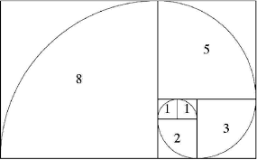
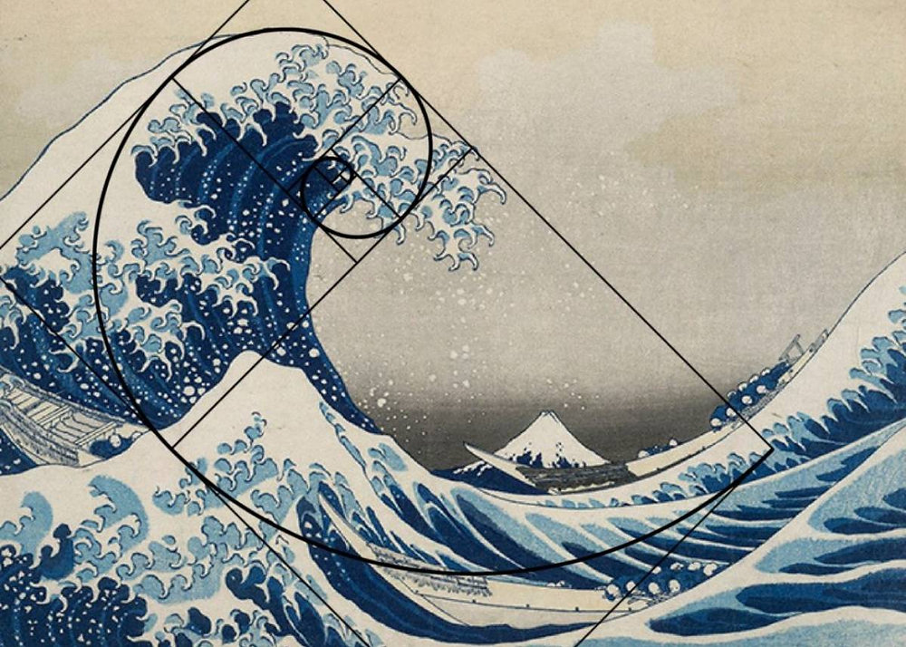

The equations that connect us all
I set out on this project with the knowledge of the fibonocci sequence. I walk around and see so many patterns that I swore had to have an explanation. There must be a function underlying it all. With this suspicion in mind, I set out on my research and I found that yes. There is math behind everything. Look around this site to learn more.
The fibonocci sequence is an amazing pattern that appears in nature. It is a mathematical sequence where "each number is the sum of the preceding ones". So the first parts of the sequence are 0, 1, 1, 2, 3, 5, 8, 13, 21, 34 and it goes on for eternity. A seemingly nuanced rule to make a list of number but if you graph each of those areas it creates a fascinating spiral affect (as seen in the image below). Following this pattern you see that it appears in many areas in nature, art, proportions, and like everything. Some people call this "nature's secret code" some poeple think that is crazy. You can decide for yourself it is just a coincidence or if it points to a Divine Creator.

Take the graph above and put it on any piece of "beautiful" art (this is where the arguement of beauty comes in) and crazily enough. These pieces of art
follow the same pattern unravelling in a spiral. The Wave by Katsushika Hokusai

, the Girl With the Pearl Earing byAdd your content here about sound waves, harmonics, and frequency.
Add your content here about building proportions and structure.
Add your content here about spirals, pinecones, flowers, and patterns.
Add your content here about body proportions, veins, and dance.